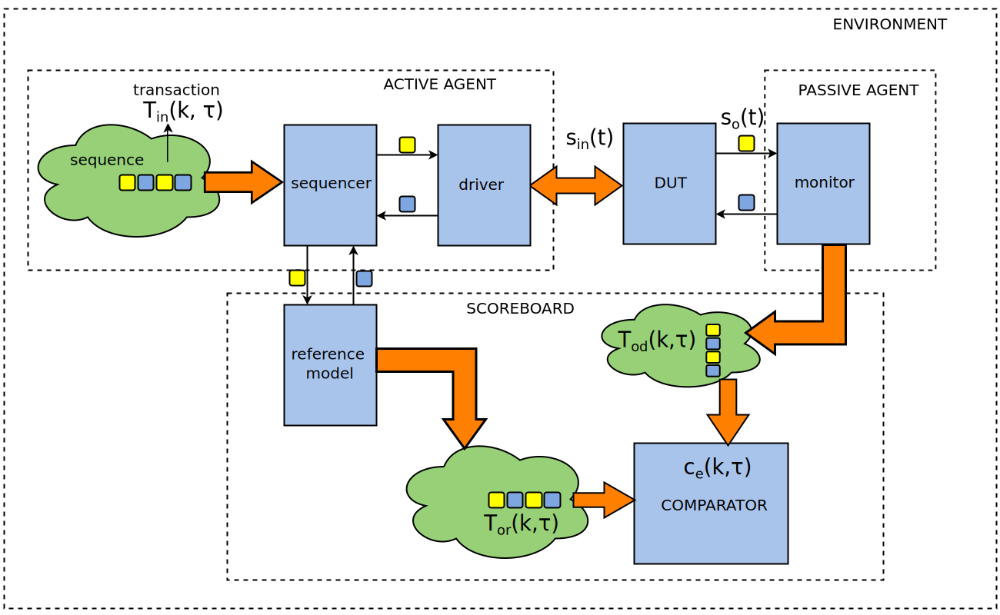
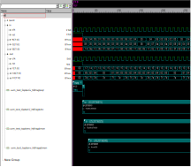

Image processing applications require large volume of data and are computationally intensive. The design of many systems should be driven with small size, weight and low power consumption constraints, which can only be achieved with a combination of hardware and software solutions, where the critical parts of the application is implemented in hardware to accelerate the system computation.
The design flow of an image processing system to be embedded in digital cameras and smartphones, usually require the partitioning of the specification in two branches: hardware and software parts. The software branch is usually implemented in C/C++ code allowing to re-use legacy libraries. This C/C++ code yields a transaction- level description that can be integrated in a SystemC environment providing stimuli for testing the hardware branch. The hardware branch is implemented by using hardware description languages, usually SystemVerilog. The integration of the hardware and software branches is done by simulation. The final design is submitted to exhaustive tests before its physical fabrication to find bugs and thus avoid the manufacture of an incorrect system that would cost thousands to millions of dollars.
This design flow is not error free and thus verification methodologies like UVM and the library UVM Connect (UVMC) are mandatory part of the design flow, consuming up to 80% of the project budget. A problem that limits the use of UVMC in the design of image processing system is the maximum payload allowed by the UVM packer. If a transaction has a size larger than of the maximum payload it cannot be exchanged at once. In this case to exchange a large data package it would be necessary to split it into several parts having the size of allowed payload and then execute as many transactions as chunks are available [1]. As an example for exchanging a relatively modest image of 2MB it would necessary to execute 512 transactions since the maximum payload allowed for the UVM packer is 4KB. This is quite time consuming and becomes critical in the case of high resolution raw video since one second at 30 frames per seconds correspond to approximately 178 MB of data.
To address the size limit constraint of 4096 bytes im- posed by the library UVM Connect, we present a way to expand the size of transactions. Rather than exchange the data content, that is limited to 4KB per packet, the proposed approach in this paper sends the memory address of the transaction, that is equivalent to a long unsigned integer with 64 bits. Thus, this approach leads to a significant decrease in simulation time compared with the method proposed in [1], which is based on fragmenting the data into chunks. This technique of applying the proposed method of exchanging transactions defined as memory address to yield a framework for design and functional verification of image processing applicatons (The functional verification using UVM of the RGB to YCbCr converter will be used as a case study in this post).
TLM Mapping
TLM Mapping is the first step within the UVM Environment. At this stage, the OpenCV application is integrated as a component within the environment, providing functions to read image files using Direct Programming Interface (DPI), that is an interface in which SystemVerilog calls functions from foreign languages like C or C++.
In Code 1 the frame_sequence class generates frame transactions, which contains the image data crossing the environment. To start the transaction, the external function readframe shown in Code 2 exports OpenCV functions implemented in C++ via DPI. This C++ function allocates a buffer with all the pixels inside the image.
Code 1: SystemVerilog class of frame_sequencecontext function longint unsigned readframe(string filename); class frame_seq extends uvm_sequence #(frame_tr); `uvm_object_utils(frame_seq) function new(string name="frame_seq"); super.new(name); endfunction: new string filename = "img.jpg"; task body; frame_tr tr = frame_tr::type_id::create("tr"); start_item(tr); tr.a = readframe(filename); finish_item(tr); endtask:body endclass: frame_seq
extern "C" unsigned long long readframe(const char* filename) { Mat image = imread(filename, 1); return (unsigned long long)image.data; }
To deal with the limitation of the maximum 4KB payload per transaction when using UVMC, traditional approaches are normally based on the transmission of image frames in several smaller chunks of data [1], as can be seen in Codes 3 and 4. This approach is functional but not efficient when large volume of data must be transmitted per transaction. In our case, the goal is to achieve functional verification of systems for processing high resolution images. Thus, the traditional approach results in long simulation time.
Code 3: SystemVerilog class of frame_transaction defined as 4KB block of data`define SIZE_CHUNK 1024 class a_tr extends uvm_sequence_item; int a[`SIZE_CHUNK]; `uvm_object_param_utils_begin(a_tr) `uvm_field_sarray_int(a, UVM_DEFAULT) `uvm_object_utils_end function new (string name = "a_tr"); super.new(name); endfunction endclass
#define SIZE_CHUNK 1024 struct a_tr { int a[SIZE_CHUNK]; }; UVMC_UTILS_1(a_tr, a)
Rather than exchanging the data content, that is limited to 4KB per packet, our proposed approach sends the memory address of the transaction, that is equivalent to a long unsigned integer with 64 bits. Thus, this approach leads to a significant decrease in simulation time compared with the method proposed in [1].
The outline of the transactions defined as memory address can be seen in Codes 5 and 6. This outline is the core of the UVM Environment of the proposed framework.
Code 5: SystemVerilog class of frame_transaction defined as memory address of the imageclass a_tr extends uvm_sequence_item; longint unsigned a; `uvm_object_param_utils_begin(a_tr) `uvm_field_int(a, UVM_DEFAULT) `uvm_object_utils_end function new (string name = "a_tr"); super.new(name); endfunction endclass
struct a_tr { unsigned long long a; }; UVMC_UTILS_1(a_tr, a)
Extending the Transaction Payload in UVM Connect
To compare the execution time to send frame transactions from a source to a sink, two methods were proposed: the first method is is to slice the data according to [1]. The second method is our approach to define the transaction as a memory address to the image data. Table I shows the results of the simulation time to transfer images of 400KB, 4,000KB, 20,000KB and 40,000KB with the two methods.
{kind=link}
The simulation time to send a transaction using Method 1 in seconds is computed in function of the number of chunks (NC = no of blocks of 4KB) according to Equation 0, in which is obtained by linear interpolation of the points from Table I, where tref ± α ≅ 0.82s is the approximated time to send the transaction with the Method 2, α is a very slow number and λ = 0.00325s/(block of 4KB).
{kind=link}
It is important to say that this relation is based on the computer configuration used in the experiments. The following setup was used: Intel Pentium (R) CPU G630 with 3.6GiB of RAM Memory in a 64-bit CentOS 7.
Mathematical Model of the UVM Environment
The general structure of the UVM Environment for Image Signal Processing applications is illustrated in Figure 1. The environment is composed by an Active Agent that stimulates the Device Under Test, a Passive Agent that collects data to be evaluated and a Scoreboard, which evaluates the stimuli coming from both agents.
 Figure (1): General structure of the UVM Environment{kind=link}
For random cases, the Active Agent creates a sequence of transactions Tin(k, τ), with the form of Equation 1, where Tin(k, τ) is a random vector of integers tin(·,·) ˜ U(−231 , 231−1) and U(−231 , 231−1) denotes a discrete uniform probability distribution which stimulates the reference model and the driver. For natural images taken from a camera or a database, in the frequency ω Tin(k, τ) has the power density spectrum S(|ω|) = c/(|ω|2-χ), where c>0 and χ<1[2].
{kind=link}
The driver converts the transaction Tin(k, τ) into signals sin(t), according to Equation 2, where the function D(·) converts transactions into signals that feeds the device interface. The DUT produces the output signals so(t) = DUT(sin(t)), that is collected by the monitor. The monitor defines the function M (·) that converts the signals so(t) into output transactions Tod(k, τ), where Tod(k, τ) is defined in Equation 3. The operation of both functions D(·) and M (·) is depicted in Figure 2. Similarly, the output transactions of the referente model Tor(k, τ) has the form of Equation 4.

{kind=link}
{kind=link}
{kind=link}
The time τ of the k−th transaction is related to the t−th period of the clock according to Equation 6, where N is the size of Tin(k, τ).
{kind=link}
{kind=link}
Both transactions generated by the monitor and the output of the reference model should be compared by the comparator in which evaluates the comparison error ce(k,τ). If the difference of both transactions are lower than a threshold ε, then they have a match, otherwise they mismatch as can be seen in Equation 7.
{kind=link}
Validation of Image Signal Processing Applications
The mathematical model of the UVM Environment of Figure (1) with an emphasis on image processing is a formal description that can be extended to other applications. In the particular case of the color converter of Figure (3), the RGB input interface collects at time t three red pixels R (t), G (t) and B (t) and the DUT produces three output pixels Y(t), Cb(t) and Cr(t) according to Equation 8.
{kind=link}
{kind=link}
A screenshot of the DVE from Synopsys running the simulation of the Verification Environment can be seen in Figure (4).
 Figure (4): DVE running simulation{kind=link}
Also available in GitHub and in IEEEXplore
This Framework was adapted to validate a TLM model (when the RTL model is not available at the eayly stages of the design flow) for a Face Detection System using the Viola Jones algorithm [3].
The full UVM Environment code of the framework is available in GitHub. You can also check the accepted paper for free at this link.
References:
[1] Mentor Graphics Corporation. Fast packer converters. https://
verificationacademy.com/verification-methodology-reference/uvmc-2.3/docs/html/files/examples/xlerate-connections/README-txt.html
[2] Daniel L Ruderman. The statistics of natural images. Network: computation in neural systems, 5(4):517–548, 1994.
[3] Campos, N.C., Monteiro, H.A., Brito, A.V., Lima, A.M., Melcher, E.U. and Morais, M.R., 2017, October. A framework for design and validation of face detection systems. In Electrical, Electronics Engineering, Information and Communication Technologies (CHILECON), 2017 CHILEAN Conference on (pp. 1-7). IEEE.